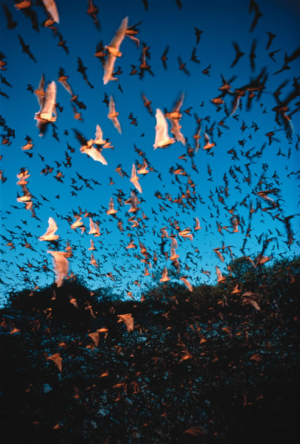

Fantastic Bats!
Diverse in appearance and amazing in flight, bats are beautiful for many reasons.
By Terry Krautwurst
October/November 2005
Batty: When it comes to our notions about bats, we humans always have been, and continue to be, distinctly that. Consider, for instance, the persistent notion-held in one version or another throughout the world-that bats have a tendency, if not outright inclination, to swoop down on humans and become entangled in our hair. Never content to leave a silly idea untrumped (bats may swoop low over the heads of humans at night, but only in pursuit of buggy prey, not a hairy home), our species has come up with all sorts of batty elaborations. Once a bat is in your hair, according to varying folklore, you’re really in trouble: Your hair will turn gray; the bat will pull your hair out; you’ll have bad luck; you’ll go insane.
But it’s hardly just “bat hair days” that we associate with these creatures. For centuries, bats have been considered the “familiars” of witches and evil creatures from the netherworld. So it is that no Halloween scene is complete without bats flitting about a pointy-hatted witch, and no horror movie is horrifying without bats flying from a tomb. Of course, we all know that those bats in particular could be vampires: blood-sucking undead who commute from one victim to the next by taking to the air as bats.
At least folklore also acknowledges that bats can be useful, albeit for questionable purposes. In his Natural History, Pliny the Elder advised placing a drop of bat blood under a woman’s pillow as an aphrodisiac. If you have more than a drop to spare, you could give yourself better night vision by smearing bat blood on your face - or, according to another belief, you could drink the bat blood to make yourself invisible.
Bats and bat parts figure in a virtual pharmacopeia of potions and cures. Bat’s blood, dried bat hearts, bat livers, bat wishbones, bat eyes, bat ears - you name it, and it’s likely to have been mixed into some sort of concoction or cure for anything from lovesickness to epilepsy, gout to snakebite. Maybe the most famous batty ingredient of all time is in the less-than-appetizing witches’ brew in Shakespeare’s Macbeth:
Eye of newt, and toe of frog,
Wool of bat, and tongue of dog.
In short, our odd beliefs and improbable superstitions about bats are legion. Perhaps that’s because bats themselves are no less odd and improbable. We are, after all, talking about a mammal that spends most of its life hanging upside down in dark places and that soars through the night on leathery wings hunting for prey by listening to the echoes of its own screams.
The facts about bats, it seems, are every bit as fantastic as the fiction.
Holy Diversity!
Bats are members of the order Chiroptera, a Latin word meaning “hand wing,” a reference to the creatures’ handlike wing bones. Although we think of bats as uncommon and seldom-seen, their numbers reveal the truth. Of the roughly 5,400 mammal species on our planet, about 1,100 are bats - in other words, about one out of every five mammal species is a bat. Their diversity is so extraordinary that biologists further divide the order by size, into Megachiroptera, or megabats, and Microchiroptera, or microbats. Megabats are found only in the tropics and are collectively known as flying foxes, for their foxlike faces. The biggest of these are the giant flying foxes, the world’s largest bats, which weigh as much as 3.5 pounds and have wingspans of up to 6 feet.
Microbats, at the other end of the spectrum, occur worldwide and include the planet’s smallest mammal, the bumblebee bat of ?Thailand. The contrast with its flying-fox cousins is astounding: A bumblebee bat has a wingspan of about 5 inches and weighs four one-hundredths of an ounce, or about as much as one paper clip.
All of the 46 bat species that live in the United States and Canada are microbats, ranging in size from the balloon-eared western mastiff bat, with a wingspan of 22 inches, to the diminutive western pipistrelle, which weighs barely more than a penny and is about 2.5 inches long. Actually, most of our bats are decidedly small, but their spread wings make them seem bigger. One of our most common “large” species - the big brown bat - has a wingspan of up to 13 inches, but weighs only half an ounce.
Of course it’s not just size that defines diversity among bats-ghost-faced bat, mustache bat, horseshoe bat, hammer-headed bat, bulldog bat, leaf-chinned bat and slit-faced bat.
Although many tropical bats feed entirely on fruit or flower nectar, and a few swoop down over water to snag fish or frogs for dinner, more than 70 percent of all bat species feed on insects. This includes all bats in the United States and Canada, except for three nectar-sipping types that live along the U.S./Mexican border.
Most bats hunt by night and sleep by day. The majority are social animals and roost in groups or colonies, the largest of which - a colony of Mexican free-tailed bats living in Bracken Cave in central Texas-numbers more than 20 million. For roosting sites, most bat species prefer attics, caves or abandoned mines. Other types of bats are solitary tree dwellers that hang out in trunk hollows or from leaf-sheltered branches.
Winter Break
In late summer or early fall, because colder weather means fewer insects and the coming of winter, most North American bats either migrate or hibernate. Some species travel south as far as Mexico, but most move shorter distances to a hibernaculum, usually a cave or abandoned mine, where the temperature constantly remains a few degrees above freezing. Here, the bats go into a torpor; their breathing and heart rates slow, and their body temperatures fall from about 104 degrees to around 40 degrees. Even in this slow-burn state, a bat has just enough stored fat in its small body to get through the winter. If the temperature inside the cave increases, or if the bat is awakened, its metabolism speeds up and it will likely use up its stored fat and starve. In some cases, even brief disturbances by humans have wiped out whole colonies of hibernating bats.
Depending on the species, a hibernating colony may contain only females, while others may be coed. In nearly all cases, most females spend the winter almost pregnant - literally. Bats mate in the fall, but the female holds the sperm inactive and delays ovulation until spring, after she’s had enough time to rebuild her energy reserves. Pregnant females move to a warmer roost, or to a warmer part of the cave, forming nursery colonies. Bats are born 50 to 60 days after ovulation. The pup emerges naked and helpless, with undeveloped wings but also with tiny claws on its hind feet and thumbs, enabling it to climb up its mother to nurse. In about one month, it’ll be able to fly and feed on its own.
Flexible Fliers
If you’ve ever watched a bat dive, swoop and swerve in the sky at dusk, you know there’s no confusing it with a bird’s flight - a bat’s movements are quicker and less predictable, more aerobatic. Like birds, bats have wings that are supported by arm bones. But unlike a bird’s, each bat wing also is supported by four elongated finger bones and a short thumb: a five-digit “hand” similar to our own in basic skeletal structure. The thumbs have a little hook at the end for clinging to tree branches or cave walls. The fingers are webbed together, sandwiched between two thin layers of leathery skin that connect to the bat’s body, forming a continuous airfoil. Another double membrane connects the two hind legs. Between the wings’ layers of skin, there is no flesh at all, just bones, blood vessels and nerves.
Also unlike bird wings, bat wings are not rigid. The finger bones are thin, light and flexible, and the skin is extraordinarily elastic. With every flap, the wings billow and change shape, adapting to the bat’s directional shifts and to varying airflows. Scientists still don’t understand bat aerodynamics entirely. But one thing’s certain: The bat’s flexible wings give it amazing maneuverability, like a living stunt plane. By folding its wings into different shapes, the bat can change direction quickly, zooming and tumbling through the air. It can roll, climb,dive, somersault and even hover like a hummingbird. When landing, a bat executes a last-second flip, so that it ends up hanging upside down, with its wings folded alongside its body like a collapsed umbrella.
A bat also uses its flexible wings to snag insects on the fly. Pursuing its prey one bug at a time, a bat flexes its fingers to make a scoop in its wing or tail membrane, strikes the insect, then quickly grabs the stunned morsel with its hind feet and pops it into its mouth.
Silent Screamers
Of course, in order to catch a flying, fleeing insect at night, you have to find and follow it in the dark - not an easy task, regardless of your flying ability. No bats are blind, but insect-eating species have only fair night vision. So they use sound to track and pursue prey.
As they fly through the night, microbats emit a pulsating stream of high-frequency squeaks and clicks through either their nose or mouth, depending on the species. When the sound waves strike an obstacle or object-say, a tree limb or a tasty blood-engorged mosquito - they bounce back to the bat as echoes. The bat instantly processes the data and responds accordingly: swerving in the case of the branch, attacking in the case of the juicy mosquito, and often doing both at the same time. Bats use this sonarlike system, called echolocation, for both navigation and hunting. It is amazingly sophisticated and precise: An echolocating bat can detect objects as small as a human hair; it can use riverbanks, vegetation and other terrain features as acoustic landmarks; and it can determine not only a target’s speed and direction, but also its size and surface texture. Researchers have found that bats can perceive not just an object’s position, but also its 3-D form. The echo from a deciduous tree is different from the echo of an evergreen. The echo from an unappetizing hard-shelled beetle is different from a tender gnat.
Scientists are struggling to understand fully how echolocation works. They do know that different bat species emit sounds in different ways, using varying combinations of frequencies, harmonics and intensities. As a bat searches for prey, it sends out a relatively low number of sound pulses; typically about 10 per second. When it detects prey and flies progressively closer, it speeds up its clicks and shortens their duration. Just before the bat strikes, the pulses may be only a fraction of a millisecond long and may number as many as 200 per second; scientists call this a “feeding buzz.”
Most bat sounds are well above the range of human hearing, so as we watch them diving and swooping at night, we’re not aware of the volume of their screams. Bats that hunt in the open, such as the big brown bat, generate amazingly high-volume sound: 110 decibels measured at 4 inches from the bat’s mouth - the loudness of a smoke detector 4 inches from your ears. Bats that forage in closer quarters, such as a forest, emit low-intensity sound: about 60 decibels, or the level of normal human conversation.
We can’t hear bats because we’re only human. But some insects can, moths in particular. They’ve evolved their own bat radar and will dive for cover when they detect a bat’s clicks. Some moth species, in fact, can make their own ultrasonic clicks that effectively “jam” the bat’s sounds and confuse it.
Beauty in the Beasts
Take another look at those bizarre, alienlike folds and wrinkles on insect-eating bats’ faces, and at the odd, cone-shaped growth (called a tragus) projecting from each ear on most species - they’re all parts of the animals’ echolocating bug detectors. And those tiny, sharp, daggerlike teeth? They’re for piercing the exoskeletons of insects, not for biting humans or other animals. Microbats are the world’s single most effective controllers of flying-insect populations. Just one big brown bat can consume up to 1,200 mosquitoes an hour. Those 20 million Mexican free-tailed bats in Bracken Cave gobble up 200 tons of insects every night. Fruit- and pollen-eating megabats, meanwhile, are critical pollinators of countless tropical plants. Fish- and frog-hunting tropical bats play critical roles in their ecosystems, too.
In other words, whether you react to bats with admiration or outright horror, there’s no denying their value to our planet. They’ve been soaring our night skies on improbable wings, adding their own warp and weft to our world’s amazing web of life, for more than 50 million years. What could be more beautiful than that?
Help Save the Bats
Avoid caves and abandoned mines
Turn off the bug zappers
Put up bat houses
Bat Conservation and Management
|
MICHAEL DURHAM (3) Left: Townsend's big-eared bat roosts on a rock. When this bat hibernates, its large ears fold back. Top: The pallid bat, know for eating ground insects, including scorpions. Right: A hoary bat, the most widely distributed bat in the United States and Canada. |
 THEO ALOFFS/GETTY IMAGES Grey-headed flying fox of Australia. |
MICHAEL DURHAM Silver-haired bat. |
|
MICHAEL DURHAM Hoary bat. |
BILL BEATTY Big brown bat. |
 STEPHEN KRASEMANN/GETTY IMAGES The 20 million Mexican free-tailed bats that live in Texas’ Bracken Cave consume about 200 tons of insects every night. |
|
MICHAEL DURHAM (2) A long-eared myotis bat swoops down for a drink from a small pond in eastern Oregon. |
|
|